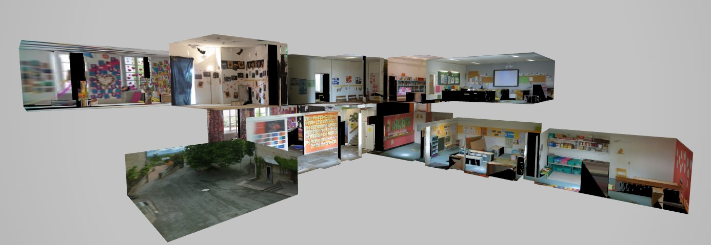
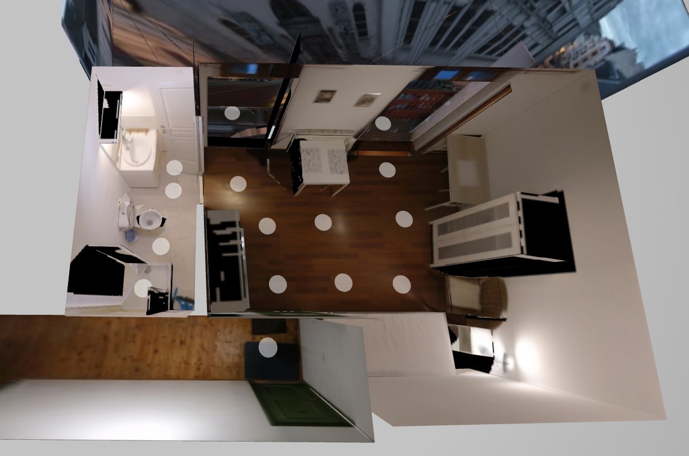
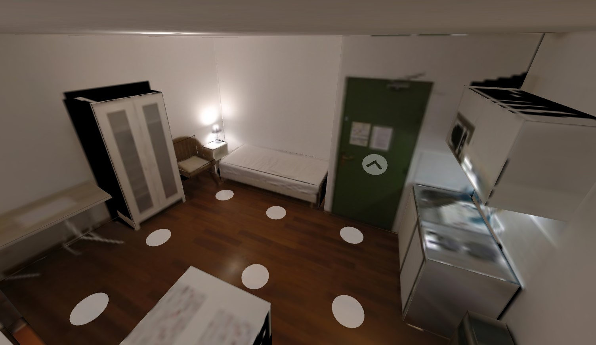

Visites Virtuelles
Sommaire
I. Visites virtuelles à 360°
Les visites à 360° sont réalisées avec à l'aide de caméras 360, de DSLR, ou d'un LiDAR dédié, et sont traitées sur des platformes de virtual tour, telles que
Matterport ou
Metareal.
Leur place est de plus en plus importante dans l'immobilier car elles permettent de mieux se projeter dans un lieu.
I.i Portes ouvertes École Saint-Hélène
C'est ma 1ère visite virtuelle à 360°. Si la maquette 3D obtenue est assez bonne,
je n'ai pas pris assez de photos entre les pièces : la navigation se fait donc parfois à travers les murs.
La maquette 3D permet un déplacement continu et naturel de la caméra, et est une nette évolution face aux simples transitions des visites virtuelles classiques.
I.ii Visite d'un appartement deux pièces
 J'ai pris soin de prendre des photos devant chaque porte pour une navigation naturelle.
II. Photogrammétrie : visites en 6DOF
Voir plus de détails sur mes réalisations en photogrammétrie
Les visites en 6 degrés de liberté permettent de plonger dans un lieu en réalité virtuelle, et parfois d'intéragir avec lui.
Un créateur d'environnements VR a mentionné un de mes scans dans une vidéo, pour son effet "Whoa" et la sensation d'être sur place procurée.
D'autres de mes scans :
Voir plus de détails sur mes réalisations en photogrammétrie
III. Modélisations 3D
J'ai réalisé le modèle 3D de la future maison d'un proche à l'aide de
Sweet Home 3D,
que j'ai ensuite intégré en réalité virtuelle dans le moteur de jeux
Source2
à echelle 1:1 pour qu'il se projette dedans.
Cela a permis de changer l'agencement de deux pièces avant la construction.